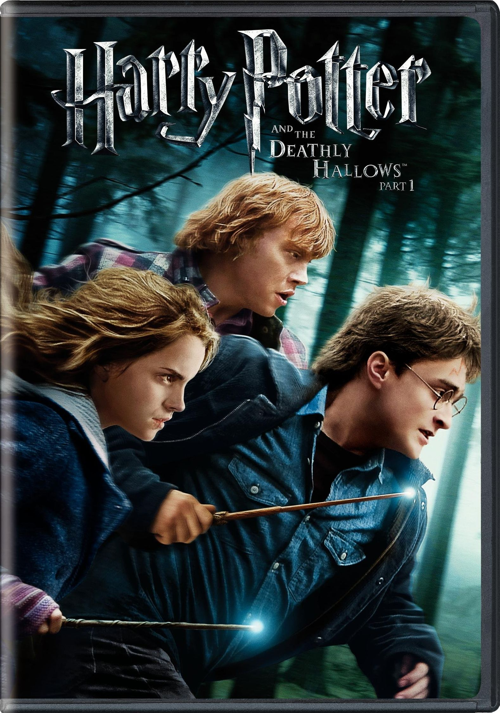

Em Guardiões da Galáxia, cinco mercenários em uma galáxia distante são forçados a juntar forças para fugir da prisão, e acabam ficando em meio a um conflito cósmico.
Harry Potter é um garoto órfão de 10 anos que vive infeliz com seus tios, os Dursley. Até que, repentinamente, ele recebe uma carta contendo um convite para ingressar em Hogwarts, uma famosa escola especializada em formar jovens bruxos.

Na ilha de Berk, os vikings dedicam a vida a combater e matar dragões. Soluço, filho do chefe Stoico , não é diferente. Ele sonha em matar um dragão e provar seu valor ao pai, apesar da descrença geral. Um dia, por acaso, ele acerta um dragão que jamais foi visto, chamado Fúria da Noite.
A situação está tensa na casa dos Stratford. Bianca não vê a hora de arranjar um namorado, mas seu pai não permite que ela saia com garotos. Para resolver a questão, Cameron, apaixonado por Bianca, resolve contratar o misterioso Patrick Verona para seduzir a futura cunhada.
Uma década após os eventos do primeiro filme, Avatar 2: O Caminho da Água começa a contar a história da família Sully: Jake, Neytiri e seus filhos. A trama apresenta os perigos que os esperam, os esforços que fazem para se manterem seguros, as batalhas que enfrentam para sobreviver e as tragédias que suportam.